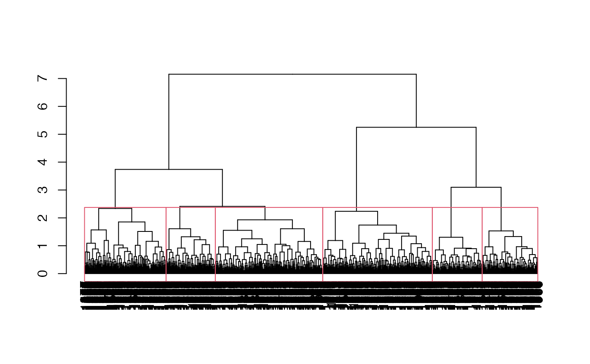

Example Dataset in `SampleCore`
J. Aravind
2025-12-08
Source:vignettes/additional/Example_Clustered_Data.Rmd
Example_Clustered_Data.RmdICAR-National Bureau of Plant Genetic Resources, New Delhi.
Introduction
The example datasets cassava_EC and
cassava_CC in EvaluateCore for demonstrating
various functions were generated using the following steps from the
source data (international_institute_of_tropical_agriculture_cassava_2019?).
Setup the environment
# Load required packages
library(EvaluateCore)##
## --------------------------------------------------------------------------------
## Welcome to EvaluateCore version 0.1.3.9000
##
##
## # To know whats new in this version type:
## news(package='EvaluateCore')
## for the NEWS file.
##
## # To cite the methods in the package type:
## citation(package='EvaluateCore')
##
## # To suppress this message use:
## suppressPackageStartupMessages(library(EvaluateCore))
## --------------------------------------------------------------------------------Load and prepare data
# Get data from EvaluateCore
data("cassava_EC", package = "EvaluateCore")
data = cbind(Genotypes = rownames(cassava_EC), cassava_EC)
quant <- c("NMSR", "TTRN", "TFWSR", "TTRW", "TFWSS", "TTSW", "TTPW", "AVPW",
"ARSR", "SRDM")
qual <- c("CUAL", "LNGS", "PTLC", "DSTA", "LFRT", "LBTEF", "CBTR", "NMLB",
"ANGB", "CUAL9M", "LVC9M", "TNPR9M", "PL9M", "STRP", "STRC",
"PSTR")
rownames(data) <- NULL
# Convert qualitative data columns to factor
data[, qual] <- lapply(data[, qual], as.factor)
# Standardise quantitative data column
data[, quant] <- lapply(data[, quant], function(x) {
scale(x)[, 1]
})Perform the clustering
# Set the seed
set.seed(123)
# Get the Gower's distance matrix
data_dist <- daisy(x = data[, c(qual, quant)], metric = "gower")
# Perform Ward's minimum variance clustering
data_clust <- hclust(d = data_dist, method = "ward.D2")
# Identify optimum number of cluster
nc_result <- NbClust(diss = data_dist, distance = NULL,
min.nc = 2, max.nc = 6,
method = "ward.D2",
index = "cindex")##
## Only frey, mcclain, cindex, sihouette and dunn can be computed. To compute the other indices, data matrix is needed
nc <- nc_result$Best.nc["Number_clusters"]
# Plot dendrogram with nc = 6 clusters
plot(as.dendrogram(data_clust))
rect.hclust(data_clust, k = nc)
# Add the group to the original data
cassava_EC_gp <- cassava_EC
cassava_EC_gp$Cluster <- as.roman(nc_result$Best.partition)
cassava_EC_gp$Cluster <- as.factor(as.character(cassava_EC_gp$Cluster))
# View the final data
str(cassava_EC_gp)## 'data.frame': 1684 obs. of 27 variables:
## $ CUAL : chr "Dark green" "Light green" "Dark green" "Dark green" ...
## $ LNGS : chr "Medium" "Long" "Long" "Medium" ...
## $ PTLC : chr "Green purple" "Green purple" "Purple" "Purple" ...
## $ DSTA : chr "Central part" "Central part" "Totally pigmented" "Totally pigmented" ...
## $ LFRT : chr "50-75% leaf retention" "50-75% leaf retention" "25-50% leaf retention" "25-50% leaf retention" ...
## $ LBTEF : chr "2" "1" "1" "0" ...
## $ CBTR : chr "Cream" "Cream" "Cream" "Cream" ...
## $ NMLB : chr "4" "0" "0" "0" ...
## $ ANGB : chr "750-900" "No branching" "No branching" "No branching" ...
## $ CUAL9M : chr "Dark green" "Dark green" "Green" "Dark green" ...
## $ LVC9M : chr "Dark green" "Green purple" "Green purple" "Green purple" ...
## $ TNPR9M : chr "2" "5" "5" "4" ...
## $ PL9M : chr "Medium (15-20cm)" "Long (25-30cm)" "Long (25-30cm)" "Medium (15-20cm)" ...
## $ STRP : chr "Short" "Intermediate" "Short" "Intermediate" ...
## $ STRC : chr "Absent" "Absent" "Absent" "Present" ...
## $ PSTR : chr "Tending toward horizontal" "Tending toward horizontal" "Tending toward horizontal" "Irregular" ...
## $ NMSR : num 4 12 10 8 5 6 9 9 3 6 ...
## $ TTRN : num 2 3 2 2.67 2.5 ...
## $ TFWSR : num 2 5.8 1.6 0.8 7.8 5.8 7 6.4 1.4 1.4 ...
## $ TTRW : num 1 1.45 0.32 0.267 3.9 ...
## $ TFWSS : num 4 4.2 0.4 0.2 7.2 5.4 10 10.2 2 1 ...
## $ TTSW : num 2 1.05 0.08 0.0667 3.6 ...
## $ TTPW : num 6 10 2 1 15 11.2 17 16.6 3.4 2.4 ...
## $ AVPW : num 3 2.5 0.4 0.333 7.5 ...
## $ ARSR : num 1 2 8 7 0 1 0 0 0 2 ...
## $ SRDM : num 38.4 28 42.6 42.3 40 40 32 31.2 34 42 ...
## $ Cluster: Factor w/ 6 levels "I","II","III",..: 1 2 3 3 4 4 3 3 2 1 ...
head(cassava_EC_gp)## CUAL LNGS PTLC DSTA
## TMe-1915 Dark green Medium Green purple Central part
## TMe-2 Light green Long Green purple Central part
## TMe-4 Dark green Long Purple Totally pigmented
## TMe-6 Dark green Medium Purple Totally pigmented
## TMe-11 Dark green Medium Purple Totally pigmented
## TMe-12 Dark green Medium Purple Totally pigmented
## LFRT LBTEF CBTR NMLB ANGB CUAL9M
## TMe-1915 50-75% leaf retention 2 Cream 4 750-900 Dark green
## TMe-2 50-75% leaf retention 1 Cream 0 No branching Dark green
## TMe-4 25-50% leaf retention 1 Cream 0 No branching Green
## TMe-6 25-50% leaf retention 0 Cream 0 No branching Dark green
## TMe-11 50-75% leaf retention 2 White 3 150-300 Dark green
## TMe-12 50-75% leaf retention 1 White 1 150-300 Dark green
## LVC9M TNPR9M PL9M STRP STRC
## TMe-1915 Dark green 2 Medium (15-20cm) Short Absent
## TMe-2 Green purple 5 Long (25-30cm) Intermediate Absent
## TMe-4 Green purple 5 Long (25-30cm) Short Absent
## TMe-6 Green purple 4 Medium (15-20cm) Intermediate Present
## TMe-11 Green purple 3 Long (25-30cm) Absent Present
## TMe-12 Green purple 2 Long (25-30cm) Short Present
## PSTR NMSR TTRN TFWSR TTRW TFWSS
## TMe-1915 Tending toward horizontal 4 2.000000 2.0 1.0000000 4.0
## TMe-2 Tending toward horizontal 12 3.000000 5.8 1.4500000 4.2
## TMe-4 Tending toward horizontal 10 2.000000 1.6 0.3200000 0.4
## TMe-6 Irregular 8 2.666667 0.8 0.2666667 0.2
## TMe-11 Tending toward horizontal 5 2.500000 7.8 3.9000000 7.2
## TMe-12 Tending toward horizontal 6 3.000000 5.8 2.9000000 5.4
## TTSW TTPW AVPW ARSR SRDM Cluster
## TMe-1915 2.00000000 6.0 3.0000000 1 38.4 I
## TMe-2 1.05000000 10.0 2.5000000 2 28.0 II
## TMe-4 0.08000000 2.0 0.4000000 8 42.6 III
## TMe-6 0.06666667 1.0 0.3333333 7 42.3 III
## TMe-11 3.60000000 15.0 7.5000000 0 40.0 IV
## TMe-12 2.70000000 11.2 5.6000000 1 40.0 IVExport the dataset
write.csv(cassava_EC_gp, "cassava_EC_gp.csv", row.names = TRUE)Session Info
## R version 4.5.2 (2025-10-31)
## Platform: aarch64-apple-darwin20
## Running under: macOS Sequoia 15.7.2
##
## Matrix products: default
## BLAS: /System/Library/Frameworks/Accelerate.framework/Versions/A/Frameworks/vecLib.framework/Versions/A/libBLAS.dylib
## LAPACK: /Library/Frameworks/R.framework/Versions/4.5-arm64/Resources/lib/libRlapack.dylib; LAPACK version 3.12.1
##
## locale:
## [1] en_US.UTF-8/en_US.UTF-8/en_US.UTF-8/C/en_US.UTF-8/en_US.UTF-8
##
## time zone: UTC
## tzcode source: internal
##
## attached base packages:
## [1] stats graphics grDevices utils datasets methods base
##
## other attached packages:
## [1] NbClust_3.0.1 cluster_2.1.8.1 EvaluateCore_0.1.3.9000
##
## loaded via a namespace (and not attached):
## [1] mnormt_2.1.1 Rdpack_2.6.4 gridExtra_2.3
## [4] permute_0.9-8 rlang_1.1.6 magrittr_2.0.4
## [7] compiler_4.5.2 mgcv_1.9-3 reshape2_1.4.5
## [10] systemfonts_1.3.1 vctrs_0.6.5 stringr_1.6.0
## [13] kSamples_1.2-12 pkgconfig_2.0.3 shape_1.4.6.1
## [16] fastmap_1.2.0 backports_1.5.0 rmarkdown_2.30
## [19] nloptr_2.2.1 ragg_1.5.0 missMDA_1.20
## [22] purrr_1.2.0 xfun_0.54 glmnet_4.1-10
## [25] jomo_2.7-6 cachem_1.1.0 jsonlite_2.0.0
## [28] flashClust_1.01-2 SuppDists_1.1-9.9 pan_1.9
## [31] psych_2.5.6 broom_1.0.11 parallel_4.5.2
## [34] R6_2.6.1 stringi_1.8.7 bslib_0.9.0
## [37] RColorBrewer_1.1-3 rpart_4.1.24 car_3.1-3
## [40] boot_1.3-32 jquerylib_0.1.4 estimability_1.5.1
## [43] Rcpp_1.1.0 iterators_1.0.14 knitr_1.50
## [46] nnet_7.3-20 Matrix_1.7-4 splines_4.5.2
## [49] tidyselect_1.2.1 abind_1.4-8 yaml_2.3.11
## [52] vegan_2.7-2 AlgDesign_1.2.1.2 doParallel_1.0.17
## [55] ggtext_0.1.2 codetools_0.2-20 plyr_1.8.9
## [58] lattice_0.22-7 tibble_3.3.0 S7_0.2.1
## [61] evaluate_1.0.5 desc_1.4.3 survival_3.8-3
## [64] xml2_1.5.1 pillar_1.11.1 carData_3.0-5
## [67] mice_3.18.0 DT_0.34.0 foreach_1.5.2
## [70] reformulas_0.4.2 generics_0.1.4 mathjaxr_2.0-0
## [73] ggplot2_4.0.1 scales_1.4.0 minqa_1.2.8
## [76] xtable_1.8-4 leaps_3.2 glue_1.8.0
## [79] emmeans_2.0.0 scatterplot3d_0.3-44 tools_4.5.2
## [82] lme4_1.1-38 fs_1.6.6 mvtnorm_1.3-3
## [85] grid_4.5.2 tidyr_1.3.1 rbibutils_2.4
## [88] nlme_3.1-168 agricolae_1.3-7 Formula_1.2-5
## [91] cli_3.6.5 textshaping_1.0.4 dplyr_1.1.4
## [94] gtable_0.3.6 ggcorrplot_0.1.4.1 sass_0.4.10
## [97] digest_0.6.39 ggrepel_0.9.6 FactoMineR_2.12
## [100] htmlwidgets_1.6.4 farver_2.1.2 entropy_1.3.2
## [103] htmltools_0.5.9 pkgdown_2.2.0.9000 lifecycle_1.0.4
## [106] multcompView_0.1-10 mitml_0.4-5 gridtext_0.1.5
## [109] MASS_7.3-65